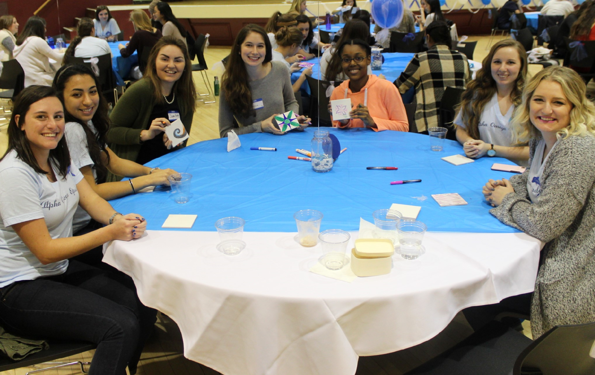
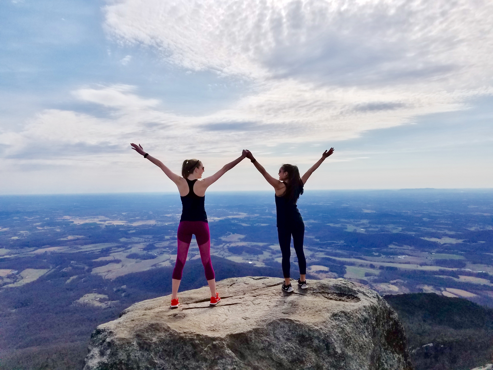
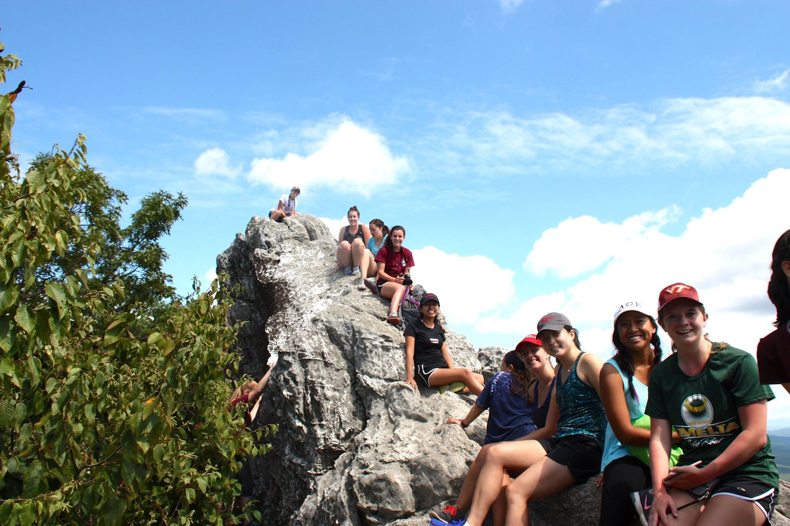
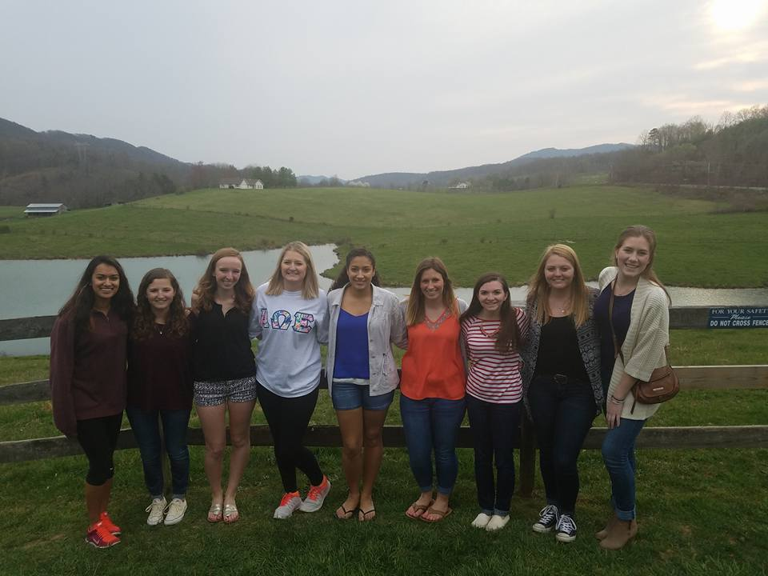
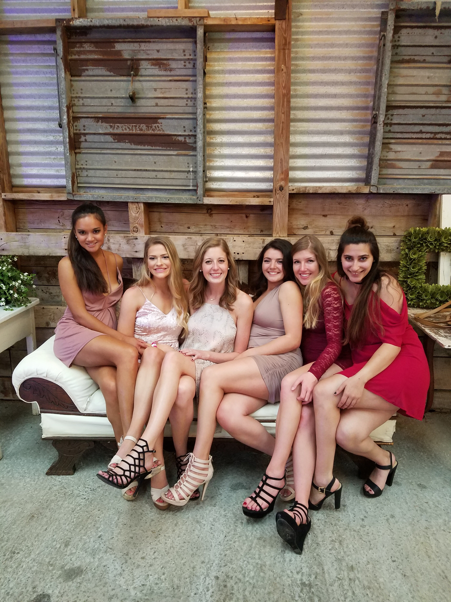
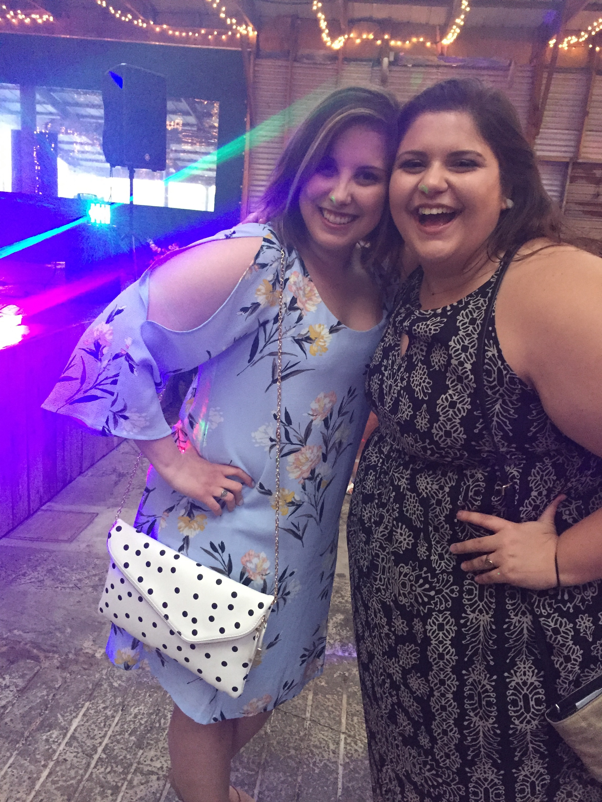
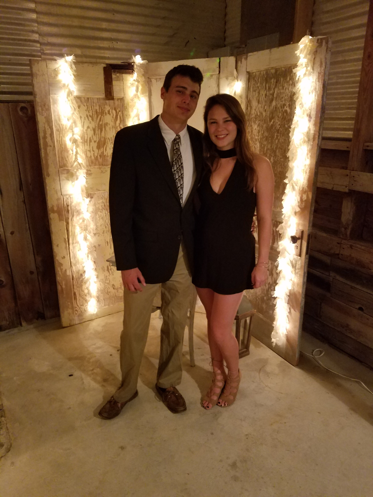

The Sigma Class
We have accepted 34 new sisters into the Sigma Class of the Rho Chapter of Alpha Omega Epsilon. From open recruitment and preference night, to bid day and candidate initiation, all the way to sisterhood initiation, we have watched these 34 sisters display the highest degree of integrity, character, professionalism, and of course unity and friendship.


Recrutiment Video
As a way of advertising for recruitment, we make a recruitment video to share on social media. It's a compilation of videos from sisters at any type of sorority event or at a non-soroity event throwing our (unoffical) hand sign!
This year the video features clips from service events, football games, intramurals, sky diving, scuba diving, concerts, and everything in between! It's a great recap of what we've been up to in the past year, and a wonderful reminder of the sisterhood that made us all want to call Alpha Omega Epsilon our home at Virginia Tech.
Recrutiment
We had over 80 girls show up to our open recruitment events this year! Throughout our three open nights, PNMs were able to learn about the fundamental aspects of our sorority. This year for Preference night and Bid Day we had a Rock 'n Roll theme where sisters and PNMs.


Sisterhood Events
In 2016 we created a new system we call Sisterhood Events. These events can be created by any sister at any point in the semester for almost any activity! To attend, all you have to do is sign up! This semester these events have ranged from taco Tuesday dinners to Disney themed breakfasts, and from sunset hikes to midnight movie premieres!
With over 100 actives, it's easy to get caught up in the same friend group within the sorority. Sisterhood events help us break out of those groups and make time to hang out with the sisters we don't have class with or see everyday!
  Formals
We had formals this year at Sinkland Farms. It was a beautiful venue and the night was filled with music and lots of dancing!
  